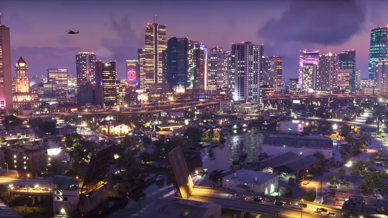

Was PSN down at GTA 6 launch? What we know about the sign-in problems
Short answer
On launch day there were thousands of reports of PlayStation Network sign-in and connection problems. Sony hasn't given a cause or linked it to GTA 6, and neither Rockstar nor Microsoft has commented.

What we know
- Reports: on November 19, Downdetector showed spikes of thousands of reports. IBTimes and Digit give different numbers, so we don't quote one.
- Symptoms: sign-in and server connection problems. According to Digit, people trying to sign in saw a “services are busy” message.
- Sony's status page: according to Endgame Tools, it reported degraded gaming and social features in more than 60 countries from 05:33 to 06:04 UTC, and showed no incidents by 11:40 UTC.
What isn't confirmed
The cause. Digit suggests GTA 6 demand may be behind it, but IBTimes says there's no evidence linking the two. Sony hadn't commented in the sources we checked. These figures and times are from launch day; things may have changed.
What to try
These are press recommendations, not official advice: restart your console, install any update the game asks for and wait a while before retrying. Check PlayStation's status page first. Endgame Tools adds that on PS5 the game may be waiting for system software version 26.07-14.23.00; that's a single source, so check your console.
If the game itself won't start, see GTA 6 won't load.
Sources
- IBTimes UK: PSN sign-in problems on GTA VI launch day (Nov 19, 2026)
- Digit: PSN down, thousands report sign-in issues (Nov 19, 2026)
- Endgame Tools: GTA 6 launch day servers, known issues and updates (Nov 19, 2026)
Written by Six Stars from the sources above, checked on November 20, 2026. Spot a mistake? Tell us via About us.